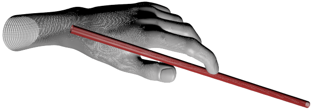
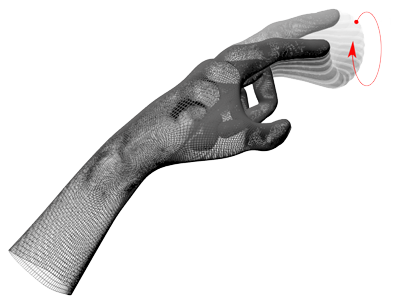

Leap Overview
The Leap detects and tracks hands, fingers and finger-like tools. The
device operates in an intimate proximity with high precision and
tracking frame rate.
The Leap software analyzes the objects observed in the device field of
view. It recognizes hands, fingers, and tools, reporting both discrete
positions, gestures, and motion. The Leap field of view is an inverted
pyramid centered on the device. The effective range of the Leap extends
from approximately 25 to 600 millimeters above the device (1 inch to 2
feet).
Coordinate system
The Leap employs a right-handed Cartesian coordinate system. Values
reported are in units of real-world millimeters. The origin is centered
at the center of the Leap Motion Controller. The x- and z-axes lie in the
horizontal plane, with the x-axis running parallel to the long edge of
the device. The y-axis is vertical, with positive values increasing
upwards (in contrast to the downward orientation of most computer
graphics coordinate systems). The z-axis has positive values increasing
away from the computer screen.

Motion tracking data
As the Leap tracks hands, fingers, and tools in its field of view, it
provides updates as a set, or frame, of data. Each frame contains lists
of the basic tracking data, such as hands, fingers, and tools, as well
as recognized gestures and factors describing the overall motion in the
scene.
When it detects a hand, finger, tool, or gesture, the Leap assigns it a
unique ID designator. The ID remains the same as long as that entity
remains visible within the device’s field of view. If tracking is lost
and regained, the Leap may assign a new ID (the software may not know
that the hand or finger is the same as the one visible earlier).
Frames
A LeapFrame object provides lists of the tracking data, gestures, and
factors describing the overall motion observed in the Leap field of
view.
Lists of tracking data
- [LeapFrame hands] — All hands.
- [LeapFrame pointables] — All fingers and tools as LeapPointable objects.
- [LeapFrame fingers] — All the fingers.
- [LeapFrame tools] — All the tools.
- [LeapFrame gestures:] — All the gestures that started, ended, or which had an
update.
The three pointables lists (Pointables, Fingers, and Tools)
contain every pointable object detected in a frame. You can access the
pointables associated with a hand through the LeapHand objects in the list
of hands. Note that a finger or tool may not be associated with a hand
if the user’s hand is only partially within the Leap field of view.
If you are tracking an individual object, such as a finger, from frame
to frame, you can use the ID associated with that object to look it up
in each new frame. Use the following functions to look up specific
object types by ID:
These functions return a reference to the corresponding object if it
exists in the current frame. If the object no longer exists, then a
special invalid object is returned. Invalid objects are well-defined,
but do not contain valid tracking data. This technique helps reduce the
amount of null checking you have to do to when accessing Leap tracking
data.
Frame motion
The Leap analyzes the overall motion which occurred since an earlier
frame and synthesizes representative translation, rotation, and scale
factors. For example, if you move both hands to the left in the Leap
field of view the frame contains translation. If you twist your hands as
if turning a ball, the frame contains rotation. If you move your hands
towards or away from each other, the frame contains scaling. The Leap
uses all of the objects within the field of view when analyzing motion.
If it only detects one hand, then the Leap bases the frame motion
factors on the movement of that hand. If it detects two hands, then the
Leap bases the frame motion factors on the movement of both hands
together. You can also get independent motion factors for each hand from
a LeapHand object.
Frame motions are derived by comparing the current frame with a
specified earlier frame. The attributes describing the synthesized
motion include:
- [LeapFrame rotationAxis:] — A direction vector expressing the axis of rotation.
- [LeapFrame rotationAngle:] — The angle of rotation clockwise around the
rotation axis (using the right-hand rule). - [LeapFrame rotationMatrix:] — A transform matrix expressing the rotation.
- [LeapFrame scaleFactor:] — A factor expressing expansion or contraction.
- [LeapFrame translation:] — A vector expressing the linear movement.
You can apply the motion factors to manipulate objects in your
application’s scene without having to track individual hands and fingers
over multiple frames.
Hand model
The hand model provides information about the position, characteristics,
and movement of a detected hand as well as lists of the fingers and
tools associated with the hand.
The Leap API provides as much information about a hand as possible.
However, the Leap may not be able to determine all hand attributes in
every frame. For example, when a hand is clenched into a fist, its
fingers are not visible to the Leap so the finger list will be empty.
Your code should handle the cases where an attribute in the model is not
available.
The Leap does not determine whether a hand is a left or right hand. More
than two hands can appear in the hand list for a frame if more than one
person’s hands or other hand-like objects are in view. However, we
recommend keeping at most two hands in the Leap Motion Controller’s field
of view for optimal motion tracking quality.
Hand attributes
The LeapHand object provides several attributes reporting the physical
characteristics of a detected hand:
- [LeapHand palmPosition] — The center of the palm measured in millimeters from
the Leap origin. - [LeapHand palmVelocity] — The speed of the palm in millimeters per second.
- [LeapHand palmNormal] — A vector perpendicular to the plane formed by the
palm of the hand. The vector points downward out of the palm. - [LeapHand direction] — A vector pointing from the center of the palm toward
the fingers. - [LeapHand sphereCenter] — The center of a sphere fit to the curvature of the
hand (as if it were holding a ball). - [LeapHand sphereRadius] — The radius of a sphere fit to the curvature of the
hand. The radius changes with the shape of the hand.
The direction and palmNormal members are unit direction vectors describing
the orientation of the hand with respect to the Leap coordinate system.

The sphereCenter and sphereRadius members describe a sphere that is placed
and sized to fit into the curvature of the hand:

Hand motion
The LeapHand object also provides several attributes reporting the motion of
a detected hand between frames. The Leap analyzes the motion of the
hand, as well as its associated fingers and tools and reports
representative translation, rotation, and scale factors. Moving your
hand around the Leap field of view produces translation. Turning,
twisting, or tilting your hand produces rotation. Moving fingers or
tools toward or away from each other produces scaling.
Hand motions are derived by comparing the characteristics of the hand in
the current frame to those in a specified earlier frame. The attributes
describing the synthesized motion include:
- [LeapHand rotationAxis:] — A direction vector expressing the axis of rotation.
- [LeapHand rotationAngle:] — The angle of rotation clockwise around the
rotation axis (using the right-hand rule). - [LeapHand rotationMatrix:] — A transform matrix expressing the rotation.
- [LeapHand scaleFactor:] — A factor expressing expansion or contraction.
- [LeapHand translation:] — A vector expressing the linear movement.
Finger and Tool lists
You can access the fingers and tools associated with a hand using one of
three lists:
- [LeapHand pointables] — Both fingers and tools as
Pointableobjects. - [LeapHand fingers] — Just the fingers.
- [LeapHand tools] — Just the tools.
You can also find an individual finger or tool using an ID value
obtained in a previous frame. Use the [LeapHand finger:], the
[LeapHand tool:], or, if you don’t need to distinguish between fingers and
tools, the [LeapHand pointable:] function. These functions return a
reference to the corresponding object in the current frame if it exists.
If a finger or tool is not associated with the hand in this frame, then
an invalid object is returned.
Finger and Tool models
The Leap detects and tracks both fingers and tools within its field of
view. The Leap classifies finger-like objects according to shape. A tool
is longer, thinner, and straighter than a finger.
In the Leap model, the physical characteristics of fingers and tools are
abstracted into a LeapPointable object. Fingers and tools are types of
pointable objects. The physical characteristics of pointable objects
include:
- [LeapPointable length] — The length of the visible portion of the object (from
where it extends out of the hand to the tip). - [LeapPointable width] — The average width of the visible portion of the object.
- [LeapPointable direction] — A unit direction vector pointing in the same direction
as the object (i.e. from base to tip). - [LeapPointable tipPosition] — The position of the tip in millimeters from the Leap
origin. - [LeapPointable tipVelocity] — The speed of the tip in millimeters per second.

The Leap classifies a detected pointable object as either a finger or a
tool. Use the [LeapPointable isTool] function to determine which one a
LeapPointable object represents.

Gestures
The Leap recognizes certain movement patterns as gestures which could
indicate a user intent or command. The Leap reports gestures observed in
a frame the in the same way that it reports other motion tracking data
like fingers and hands. For each gesture observed, the Leap adds a
LeapGesture object to the frame. You can get these LeapGesture objects from the
[LeapFrame gestures:] list.
The following movement patterns are recognized by the Leap:
- Circle — A single finger tracing a circle.
- Swipe — A linear movement of the hand.
- Key Tap — A tapping movement by a finger as if tapping a keyboard
key. - Screen Tap — A tapping movement by the finger as if tapping a
vertical computer screen.
When the Leap first classifies a movement pattern as a gesture, it adds
a LeapGesture object to the frame. If the gesture continues over time, the
Leap adds updated LeapGesture objects to subsequent frame.
Circle and swipe gestures are continuous. The Leap updates the progress of these
gestures each frame. Taps are discrete gestures. The Leap reports each
tap with a single LeapGesture object.
Important: before using gestures in your application, you must
enable recognition for each gesture you intend to use with the
[LeapController enableGesture:enable:].
Circle
The Leap recognizes the motion of a finger tracing a circle in space as
a Circle gesture.

You can make a circle with any finger or tool. Circle gestures are
continuous. Once the gesture starts, the Leap will update the progress
until the gesture ends. A circle gesture ends when the circling finger
or tool departs from the circle locus or moves too slow.
See LeapCircleGesture in the API reference for more information.
Swipe
The Leap recognizes a linear movement of a finger as a Swipe gesture.

You can make a swipe gesture with any finger and in any direction. Swipe
gestures are continuous. Once the gesture starts, the Leap will update
the progress until the gesture ends. A swipe gesture ends when the
finger changes directions or moves too slow.
See LeapSwipeGesture in the API reference for more information.
Taps
The Leap recognizes two types of taps: the downward Key Tap and the
forward Screen Tap.
Key Taps
The Leap recognizes a quick, downward tapping movement by a finger or
tool as a Key Tap gesture.

You can make a key tap gesture by tapping downward as if pressing a
piano key. Tap gestures are discrete. Only a single LeapGesture object is
added per tap gesture.
See LeapKeyTapGesture in the API reference for more information.
Screen Taps
The Leap recognizes a quick, forward tapping movement by a finger or
tool as a Screen Tap gesture.

You can make a key tap gesture by tapping or pushing foward in space as
if touching a vertical touch screen. Tap gestures are discrete. Only a
single Gesture object is added per tap gesture.
See LeapScreenTapGesture in the API reference for more information.